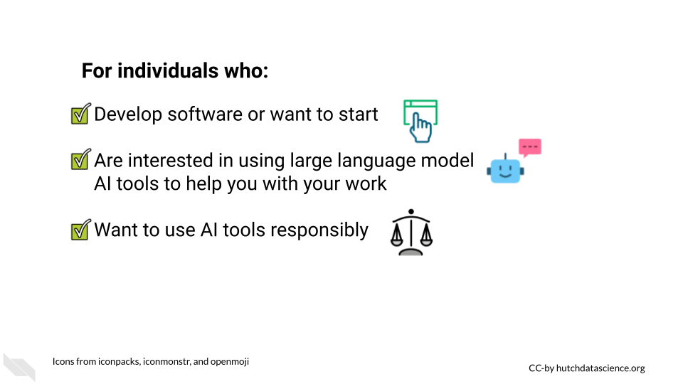
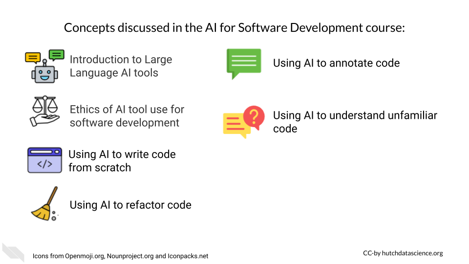
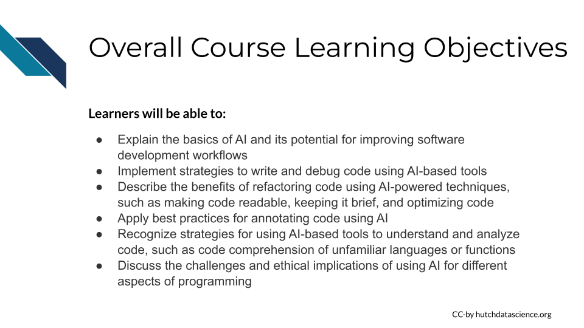

AI for Efficient Programming
About this course
This course on AI for software development explores the use of AI large language models such as ChatGPT, Bard, and others and their potential benefits and challenges. Through examples and hands-on activities, students will develop an understanding of the ways in which AI can speed up software development tasks and free up time for more creative and strategic work. By the end of the course, students will be equipped to navigate the rapidly changing landscape of software development and use AI chatbots in a way that maximizes benefits and efficiency while limiting harm as much as possible.
This course is one of our Scientific Software Development Courses.
For individuals who

We particularly recommend this course for those who are Researchers or Software Developers
Concepts Discussed

Learning Objectives

Course formats
This course is available in the following formats: